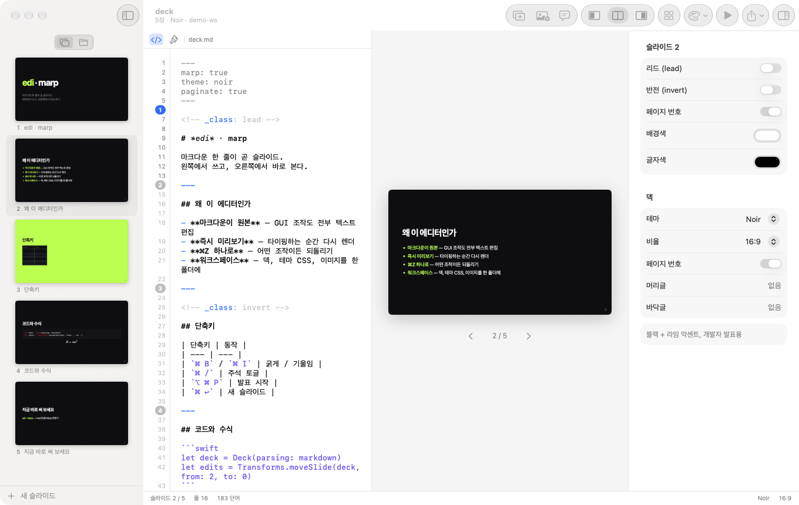
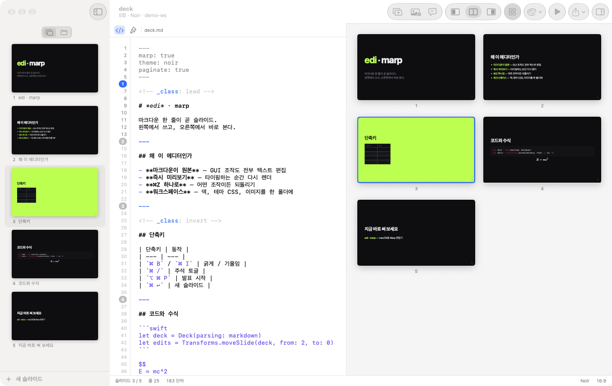

마크다운으로 쓰고,
슬라이드로 본다.
Marp 슬라이드 덱을 위한 macOS 네이티브 편집기. 왼쪽에서 마크다운을 쓰면 오른쪽에서 바로 슬라이드가 됩니다.
Windows에서 보고 계시네요. Windows 버전은 준비 중입니다. 출시 소식은 GitHub 저장소를 Watch 해 두면 받아볼 수 있어요.

기능
텍스트는 그대로, 조작은 손쉽게
덱은 언제나 평범한 마크다운 파일입니다. 버튼과 메뉴로 하는 조작도 전부 텍스트 편집으로 바뀌기 때문에, Git으로 관리하고 어디서든 Marp로 렌더할 수 있어요.
마크다운이 원본
숨겨진 슬라이드 모델이 없습니다. 디렉티브 토글, 테마 변경, 슬라이드 순서 변경까지 모두 마크다운에 그대로 반영돼요.
즉시 미리보기
타이핑하는 순간 다시 렌더됩니다. 미리보기를 클릭하면 편집기가 해당 줄로 이동해요.
무엇이든 ⌘Z
GUI 조작과 타이핑이 하나의 실행 취소 기록을 공유합니다. 어떤 조작이든 한 번에 되돌릴 수 있어요.
워크스페이스
덱, 테마 CSS, 이미지를 한 폴더에서 다룹니다. 이미지를 끌어 놓으면 assets/로 복사되고, 테마를 고치면 덱이 바로 다시 그려져요.
인스펙터
lead, invert, 배경색, 페이지 번호 같은 디렉티브를 스위치로 켜고 끕니다. 주석은 자동으로 써 줘요.
발표와 내보내기
발표자 노트가 있는 전체 화면 발표, HTML 내보내기, 그리고 marp-cli로 만드는 벡터 PDF까지.
그리드 보기
덱 전체를 한눈에
미리보기를 그리드로 바꾸면 모든 슬라이드가 한 화면에 펼쳐집니다. ⌥⌘G 한 번이면 돼요. 슬라이드를 고르면 편집기도 같이 따라옵니다.

시작하기
5분이면 첫 슬라이드
다운로드부터 첫 덱을 여는 데까지 필요한 건 이게 전부예요.
-
다운로드
EdiMarp.dmg를 받습니다. Apple Silicon과 Intel Mac 모두에서 돌아가는 유니버설 앱이고, macOS 26 이상이 필요해요.
-
설치
DMG를 열고 EdiMarp를 Applications 폴더로 끌어다 놓으세요.
-
처음 실행하기
아직 Apple 공증을 받지 않은 앱이라 처음 열 때 경고가 나옵니다. 앱을 한 번 연 다음 시스템 설정 › 개인정보 보호 및 보안으로 가서 그래도 열기를 누르세요.
터미널이 편하다면 이렇게 해도 됩니다.
xattr -dr com.apple.quarantine /Applications/EdiMarp.app
-
워크스페이스 열기
⌘O로 덱이 있는 폴더를 열거나 ⌘⇧N으로 새 워크스페이스를 만드세요. 폴더 안에 있는 마크다운 덱과
/* @theme */CSS는 하위 폴더까지 찾아서 보여줍니다. -
PDF 내보내기 준비 선택
PDF와 프린트는 marp-cli가 Google Chrome으로 렌더합니다. 미리보기와 HTML 내보내기만 쓴다면 설치할 필요가 없어요.
npm i -g @marp-team/marp-cli
단축키
손을 키보드에서 떼지 않고
자주 쓰는 동작은 모두 단축키가 있습니다. 전체 목록은 앱 메뉴에서 볼 수 있어요.
Windows 버전도 준비 중이에요
출시되면 이 페이지와 GitHub 릴리스에서 가장 먼저 알려드릴게요. 저장소를 Watch 해 두면 알림을 받을 수 있습니다.